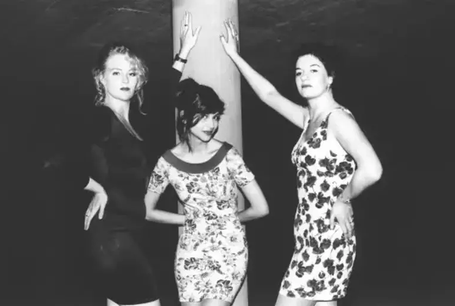

Pythonda Anomali Tespiti
Anomali tespiti, veri setlerindeki olağandışı davranışları veya paternleri belirleme sürecini ifade eden bir konsepttir. Pythonda anomali tespiti, genellikle istatistiksel ve makine öğrenimi teknikleri içerir.

Anomali tespiti, veri setlerindeki olağandışı davranışları veya paternleri belirleme sürecini ifade eden bir konsepttir. Pythonda anomali tespiti, genellikle istatistiksel ve makine öğrenimi teknikleri içerir.

Anasayfa, Üye Ol, Kayıt Ol ve Randevu Oluştur bölümleri ile PHP Kodları barındıran bir Hukuk Bürosu Web Sitesi
İçinde 3 adet form ve class bulunduran ekle, sil ve güncelle işlemlerini yapan Phpmyadmin veritabanına bağlı C# forms sigorta formu

Mikro Muhasebe Programı, KOBİ'lerin finansal süreçlerini kolay ve güvenilir şekilde yönetmek için tasarlanmış kullanıcı dostu bir muhasebe yazılımıdır.
XSLT tabanlı fatura dizaynları, Mikro Muhasebe ve diğer yazılımlarda kullanılan şablonlardır. Bu dizaynlar sayesinde fatura görünümleri özelleştirilebilir, firma bilgileri, tablo yapıları ve toplam tutar alanları isteğe göre düzenlenebilir.
 +90 546-580-35-21
+90 546-580-35-21
 kayrausta04@gmail.com
kayrausta04@gmail.com
Merhaba, ben Kayra Halil Usta. Kırklareli Üniversitesinde Bilgisayar Programcılığı, Eskişehir
Anadolu Üniversitesinde Web Tasarımı Ve Kodlama okuyorum. 4 Ekim 2004 İstanbul doğumluyum. Okulda
kendim ve arkadaşlarımın projelerini ve araştırmalarını bilgisayar ile ilgili bölüm okuyan ve bilgisayar
ile ilgilenen herkese yardımcı olması amacı ile paylaşıyorum. Ayrıca yine üniversiten arkadaşlarla kurduğumuz KRKIT.COM adresinde ve İnstagram sayfasında
her türlü web hizmetini veriyoruz. Detaylı bilgi için ilgili linklerden ulaşabilirsiniz.

İlk Bilgisayar Programı:
İlk bilgisayar programı, 19. yüzyıl matematikçisi Ada Lovelace tarafından yazılmıştır. Ada Lovelace, Charles Babbage'in tasarladığı Analitik Makine için bir program geliştirmiş ve bu nedenle tarihte ilk bilgisayar programcısı olarak kabul edilir.

Mouse'un İcadı:
Mouse, Douglas Engelbart tarafından 1964 yılında icat edildi. İlk fare, ahşap bir kasa üzerinde iki tekerlek ve bir düğme içeriyordu. Günümüzde ise fare tasarımları oldukça çeşitlilik gösteriyor.

Internet'in İlk Fotoğrafı:
World Wide Web'in (WWW) kurucusu Tim Berners-Lee, İsviçre'deki CERN'de ilk web tarayıcısı ve sunucusunu geliştirdi. İlk web sitesinde bulunan fotoğraf ise "Les Horribles Cernettes" adlı bir müzik grubuna aitti

En İlk Bilgisayar Bug'u:
Bilgisayar hatalarının adı olan "bug" terimi, 1947'de Harvard Mark II bilgisayarındaki bir sorunu giderirken, bilgisayarın içine giren bir güve nedeniyle ortaya çıktı. Bu olay, bilgisayar hatalarına "bug" demenin başlangıcını oluşturdu.